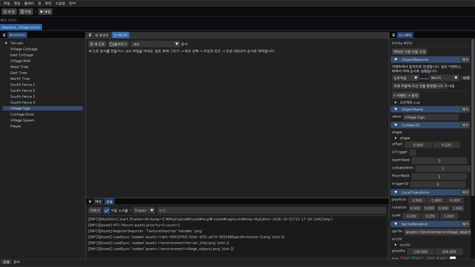
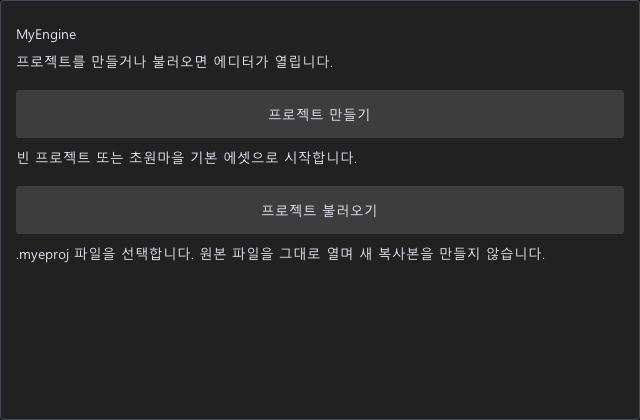
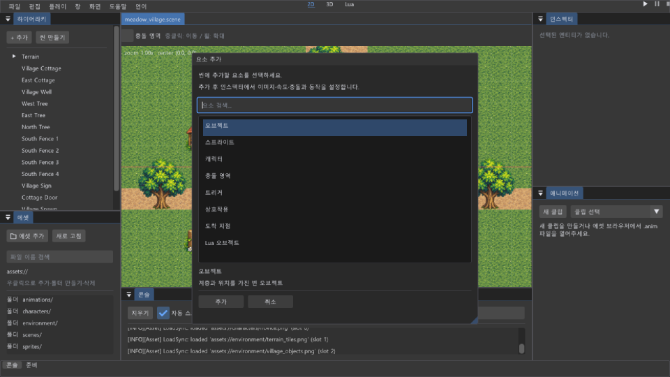
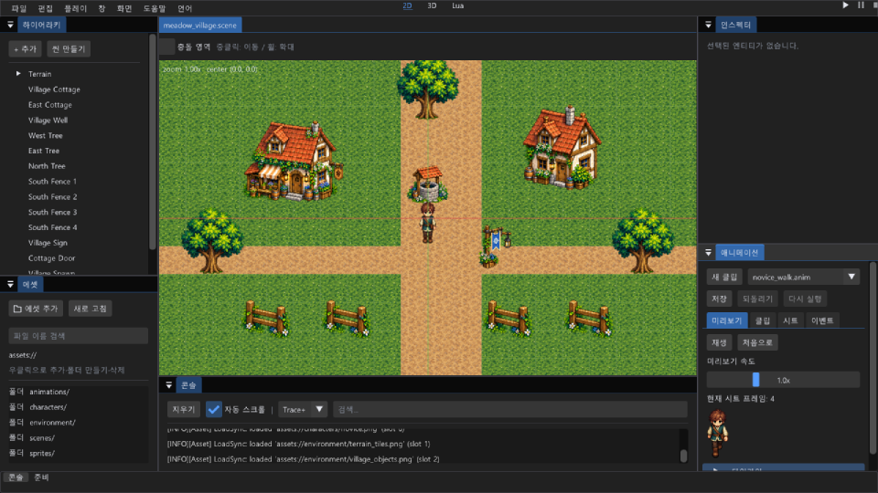
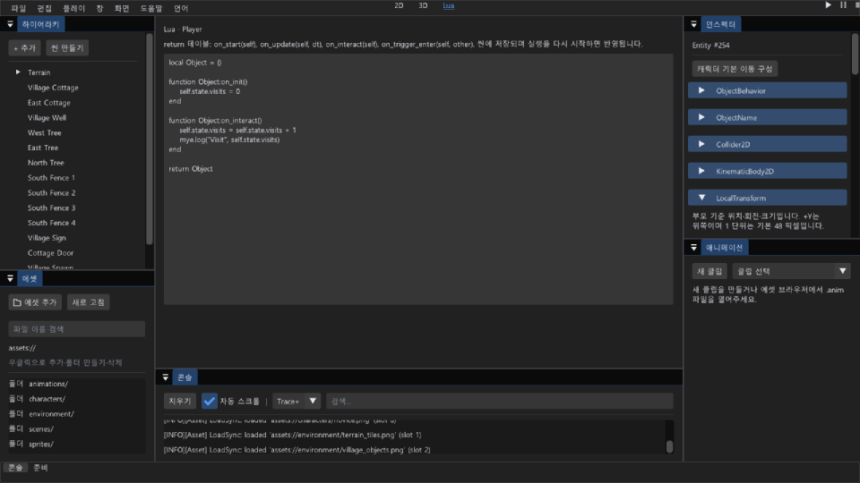
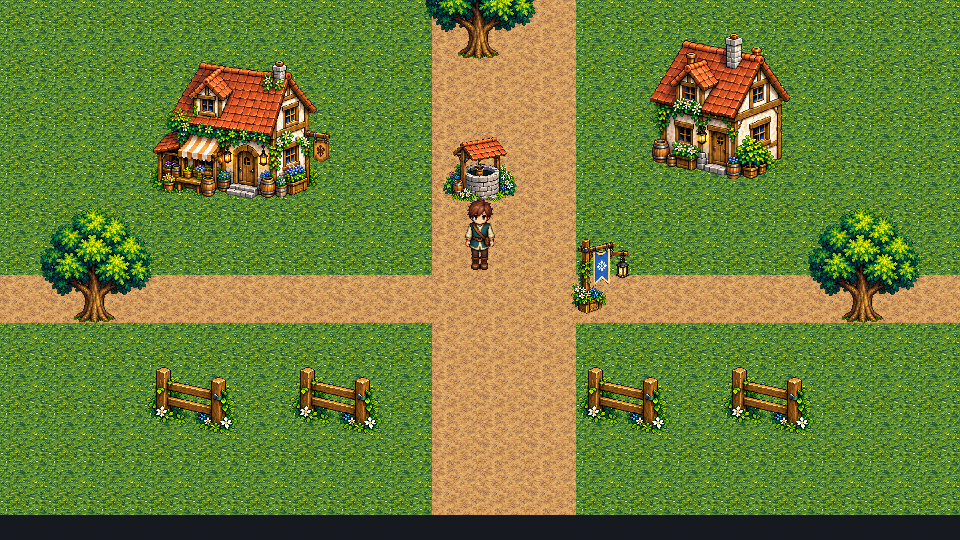
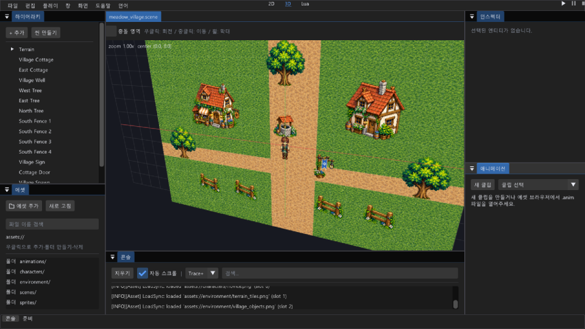

만들고 · 저장하고 · 플레이하기
초원 마을에서 첫 게임을 시작하세요.
기본 프로젝트를 만들면 개별 건물·지형 오브젝트와 레벨 1 캐릭터가 준비됩니다. 장면을 수정하고 저장한 뒤 Play로 바로 확인할 수 있습니다.

build/dev/apps/editor/Release/MyEditor.exe를 실행합니다.- 시작 창 → 프로젝트 만들기에서 이름·폴더를 지정하고 기본 콘텐츠 사용을 선택합니다.
- 프로젝트를 저장하고 Play를 누릅니다. WASD 또는 방향키로 걷고 E로 상호작용합니다.

왜 기본 프로젝트로 시작하나요?
씬·에셋 GUID·충돌·캐릭터 구성의 연결을 실제로 확인할 수 있습니다. 새 프로젝트는 원본 템플릿을 복사하므로 제작 중 변경이 다른 프로젝트에 전파되지 않습니다.
근거: ProjectContext::Create, game/starter/meadow_village.
장면 구성
건물과 지형을 오브젝트별로 편집하세요.
계층에서 개별 오브젝트를 선택하면 위치·스프라이트·충돌·행동을 인스펙터에서 바꿀 수 있습니다.
- 계층에서 건물 또는 지형을 선택합니다. 하이어라키의 씬 만들기에서 2D/3D를 선택합니다. + 요소 추가 또는 계층의 + 추가에서 요소를 검색하고 Enter로 만듭니다.
- 인스펙터에서 위치와 스케일을 수정합니다. 에셋 브라우저의 이미지는 뷰포트로 끌어 배치합니다.
- Ctrl + S로 활성 씬을 저장합니다. 전체 문서는 파일 메뉴의 프로젝트 저장을 사용합니다.

저장 구조와 이유
씬은 assets/scenes/*.scene, 이미지와 모션은 GUID 및 .meta로 연결됩니다. 에디터 배치 상태는 .myeditor에 따로 저장됩니다. 같은 오브젝트에 대한 변경은 기존 문서 Undo 스택을 사용합니다.
플레이어 구성
버튼 하나로 기본 이동을 구성하세요.
최상위 오브젝트를 선택하고 캐릭터 기본 이동 구성을 누르면 스프라이트·발밑 충돌·이동 본체·조작 컴포넌트가 추가됩니다.
- 기존 조작 캐릭터가 있으면 그 캐릭터를 편집하거나
enabled를 먼저 끕니다. 한 씬에는 활성 조작 캐릭터 1명을 사용합니다. - 최상위 캐릭터를 선택하고 이동 구성 버튼을 누릅니다. 기존 컴포넌트 값은 유지됩니다.
CharacterController2D.speed를 조절합니다. 대기·걷기 모션을 지정하고 Play로 충돌을 확인합니다.
왜 이동 설정을 묶었나요?
조작에 필요한 컴포넌트 누락을 막고 한 번의 Undo로 구성을 되돌리기 위해서입니다. 이동은 렌더 프레임과 분리된 고정 틱에서 계산합니다. 새 발밑 박스는 반폭 0.2, 반높이 0.12 월드 단위이며 이미지에 맞게 조정하세요.
근거: SetupCharacterMovement, ObjectSystem::Tick.
게임 규칙
이벤트를 행동에 연결하고 맵을 이동하세요.
코드 없이 메시지·표시 전환·위치 이동·맵 변경을 연결할 수 있습니다. 추가 규칙은 오브젝트의 Lua 콜백으로 작성합니다.
- 인스펙터에서
ObjectBehavior를 추가하고 연결을 만듭니다. 소스는 상단 Lua 작업대에서 선택 오브젝트를 편집합니다.Start,Interact,TriggerEnter,TriggerExit중 이벤트를 고릅니다. - 행동과 대상을 지정합니다. 대상 이름은 씬에서 유일해야 합니다. 빈 대상은 현재 오브젝트입니다.
- E 상호작용에는
InteractionTarget, 접촉 이벤트에는 트리거Collider2D를 구성합니다. - 출입구에
ScenePortal을 추가합니다.scenePath는assets/scenes/cottage.scene같은 프로젝트 내부 경로,spawnName은 목적지의 고유 오브젝트 이름입니다.
Lua와 컴포넌트의 역할
반복되는 이동·충돌은 공유 컴포넌트로 처리하고 콘텐츠 고유 행동만 Lua에 둡니다. 이벤트 연결은 순서대로 실행되는 목록입니다. 범용 노드 그래프나 시각 스크립트 전체를 구현한 기능은 아닙니다.
기본 마을의 표지판과 오두막 출입구에서 작동 예를 확인하세요.
외부 제작 도구와 연결
우클릭으로 에셋을 가져오고 관리하세요.
픽셀아트·리깅은 외부 도구에서 만들고 에셋 브라우저의 우클릭 가져오기로 프로젝트에 추가합니다. PNG·.anim·Lua·WAV를 검사하고 고유 GUID를 발급합니다.
- 에셋 패널에서 저장할 폴더를 열고 빈 영역을 우클릭하여 에셋 가져오기를 선택합니다.
- PNG를 뷰포트 또는 인스펙터의 에셋 필드로 드래그합니다. .anim은 SpriteAnimator 또는 캐릭터의 모션에 지정합니다.
- 파일 우클릭으로 탐색기에서 찾거나 휴지통 이동을 요청합니다. 씬·모션·열린 문서에서 참조하는 파일은 먼저 연결을 해제해야 합니다.
왜 원본 도트 편집기는 없나요?
전문 제작 도구와 중복되는 코드를 줄이고 엔진의 씬·시뮬레이션·에셋 연결에 집중합니다. 가져오기는 기존 파일을 덮어쓰지 않으며 외부 .anim의 다른 프로젝트 GUID를 자동 변환하지 않습니다. 폴더 삭제·이동·이름 변경은 아직 제공하지 않습니다.
근거: ProjectAssetOperations, AssetMeta, AssetDatabase.
프레임 모션 편집
시트 영역과 시간을 편집해 모션을 연결하세요.
애니메이션 패널에서 PNG 시트의 프레임 영역·피벗·시간·이벤트·후속 모션을 설정하고 .anim으로 저장합니다.

- .anim 파일을 에셋 패널에서 더블클릭하거나 애니메이션 패널에서 새 클립을 만듭니다.
- 시트 탭에 PNG를 놓고 그리드 또는 프레임 영역·발밑 피벗을 설정합니다.
- 미리보기 탭에서 재생합니다. 타임라인을 펼쳐 순서·프레임 시간을 편집합니다. 이벤트 탭에서 Lua에 전달할 이름·인자를 정합니다.
- 클립 탭에서 반복·방향·저장 경로를 정합니다. 반복을 끈 모션에는 후속 .anim 파일을 놓을 수 있습니다. 저장 버튼으로 확정합니다.
- 인스펙터에서 캐릭터의 idleAnimation/walkAnimation 또는 SpriteAnimator.animation에 드래그합니다.
제작 범위와 이유
픽셀 그리기·뼈 리깅은 외부 도구가 담당합니다. 엔진은 프레임과 이벤트를 고정 틱에서 재생하는 데이터 계약을 담당합니다. 미리보기와 실제 Play를 모두 확인해야 합니다.
걷기 클립 GIF·영상 보기
동일 위치에서 기본 걷기 클립의 네 프레임을 MyGame으로 각각 렌더하고, .anim에 기록된 프레임당 0.14초로 연결했습니다. 실제 키보드 이동을 녹화한 자료는 아닙니다.

게임 규칙 프로그래밍
오브젝트가 반환하는 테이블에 Lua 콜백을 작성하세요.
Lua 작업대에서 선택한 오브젝트의 코드를 편집합니다. Math·ECS·log·co는 바로 사용할 수 있습니다. 전체 함수·변수·반환값·오류 조건을 확인하세요.
local Object = {}
function Object:on_init()
self.state.visits = 0
end
function Object:on_interact()
self.state.visits = self.state.visits + 1
mye.log("방문", self.state.visits)
end
return Objectself.entity는 엔티티의 정수 핸들, self.state는 이 실행 인스턴스의 상태입니다. on_update(self, dt)의 dt는 초입니다. mye.world.entity_from_packed(self.entity)로 엔티티를 얻습니다.

제공 범위와 근거
input/audio/events/reflect/DDC/dialogue/save/NPC는 별도 앱에서 바인딩 모듈을 등록해야 합니다. 에디터에 자동 제공되지 않습니다. VM은 io/os/package/debug를 노출하지 않습니다. CharacterController2D는 Lua 이후 속도를 설정하므로 직접 Lua 이동을 만들면 조작 컴포넌트를 제거하고 본체·충돌을 남깁니다.
근거: ObjectSystem::Initialize, ScriptRuntime, Lua API 정본.
필드의 의미
인스펙터 설명을 읽고 필요한 컴포넌트만 사용하세요.
컴포넌트를 펼치면 사용 목적, 필드에 마우스를 올리면 단위·제약이 표시됩니다. 컴포넌트 전체 사용법을 확인하세요.
- LocalTransform: 위치·회전·크기. 월드 1 단위는 기본 48px, +Y는 위쪽입니다.
- SpriteRenderer: PNG·UV 영역·픽셀 피벗·표시.
- Collider2D / KinematicBody2D: 충돌 모양·반폭·오프셋·이동 본체.
- CharacterController2D: 입력·속도·대기/걷기 모션. 활성 조작 캐릭터는 최상위 한 명입니다.
- InteractionTarget / ScenePortal / ObjectBehavior: E 상호작용·맵 이동·이벤트 연결·Lua.
XYZ 플레이와 온라인 가이드에서 3D 캐릭터·360° 게임 카메라·두 계정 접속을 구성하세요.
게임용 3D 카메라는 + 추가 → 게임 카메라 3D로 만들고 위치·target·FOV·near/far를 저장합니다. Play와 MyGame이 이 카메라를 사용합니다. 메시·빌보드와 XYZ 물리 설정은 3D 컴포넌트 가이드를 확인하세요.
결과 확인
2D와 3D에서 같은 장면을 확인하세요.
2D/3D 전환은 같은 씬을 다른 카메라로 보여줍니다. Play는 별도 게임 창에서 편집 씬의 복제본을 실행합니다. 게임 창을 닫거나 Stop을 누르면 원본 편집으로 돌아갑니다.
- 상단 중앙에서 2D 또는 3D를 선택합니다. 캐릭터의 발 위치·건물 가림·충돌 범위를 확인합니다.
- 오른쪽 위 ▶로 이동·상호작용·출입구·모션 전환을 확인합니다. ⏸로 일시정지하고 ▶로 계속합니다. 프레임 진행은 플레이 메뉴의 Step을 사용합니다.
- ■로 중지한 뒤 필요한 변경을 편집 씬에 적용하고 저장합니다.


좌표와 화질 기준
왼손 좌표계, +Y 위, 기본 PPU 48, 렌더 타깃 960×540을 사용합니다. 3D 카메라 전환으로 2D 이미지가 입체 모델로 바뀌지는 않습니다. 깊이와 알파 컷아웃 계약은 렌더 문서에 있습니다.
작업 보존
오류는 하단 상태와 콘솔에서 확인하세요.
상단 메뉴를 가리는 긴 오류 문구는 하단 한 줄 상태 영역으로 이동했습니다. 전체 내용은 툴팁과 콘솔에서 확인합니다.
- Ctrl + Z / Ctrl + Y: 포커스 문서의 Undo/Redo. 애니메이션 원본과 씬의 모션 지정은 각각의 문서에 기록됩니다.
- 저장 실패: 경로·권한·남은 디스크 공간을 확인합니다. 실패한 저장은 dirty 상태를 유지하고 기존 JSON 파일을 교체하지 않습니다.
- 모션이 안 보임: 이미지 GUID·이미지 크기·에셋 새로고침·캐릭터 모션 지정·씬 저장을 차례로 확인합니다.
- 캐릭터가 움직이지 않음: 게임 창 포커스, Play 상태, 활성 조작 캐릭터 수, 최상위 배치, 이동 속도·충돌 컴포넌트를 확인합니다.
소스 빌드와 검증
cmake --build build/dev --config Debug
ctest --test-dir build/dev -C Debug --output-on-failure직접 마우스·파일 선택창 조작, 다양한 DPI, 청취 테스트는 자동 API·프레임 캡처와 구분해 확인해야 합니다. 구현 상태와 우선순위는 개발 우선순위를 참고하세요.